Kuala Lumpur × Penang — 6 Days, 5 Nights by Train and Ferry
Batu Caves at sunrise · Twin Towers at dusk · the Wednesday-only night market · and an ETS train plus ferry into George Town — two cities joined by one land-and-sea crossing.
Source: personal travel notesCompiled: 2026-09-06
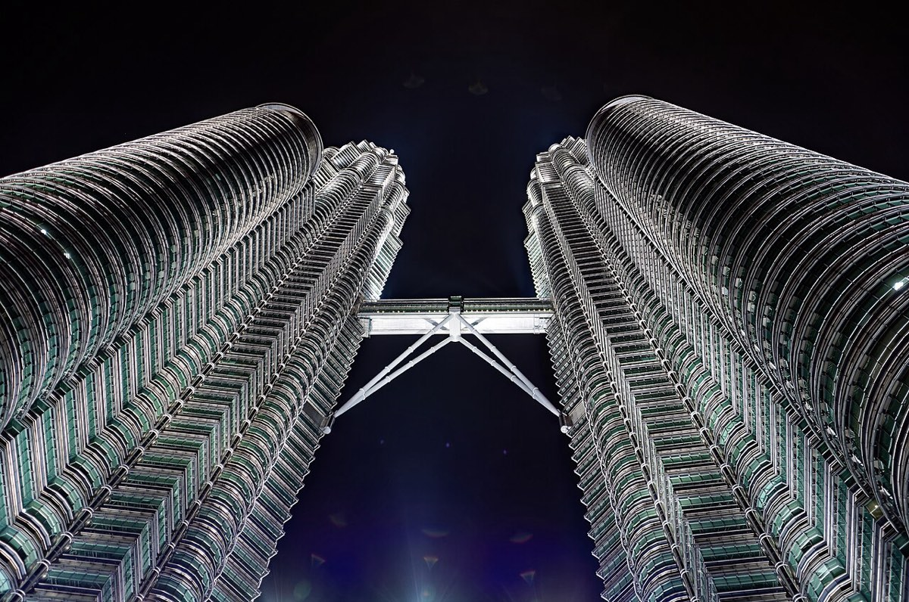
Looking up at the Twin Towers and the Skybridge on level 41 (Wikimedia Commons)
TL;DR
🏨 Kuala Lumpur: The Establishment (EST) KL Sentral (Jalan Ang Seng, Brickfields, about 10 minutes' walk from KL Sentral, 3 nights, Oct 6–8)
The two cities are connected without flying — an ETS train plus a ferry. That leg is part of the trip, not just transit.
Day 1 Arrival: clear KLIA → Bukit Bintang malls → Jalan Alor street food → late-night supper
Day 2Batu Caves in the morning, Twin Towers at dusk — both get their best light, with the hot hours parked in air-conditioned KLCC → Taman Connaught night market (Wednesdays only)
Day 3 Putrajaya and old streets: the pink Putra Mosque (morning) → Kwai Chai Hong / Lorong Panggung → REXKL → Petaling Street night market and dinner → KL Tower at night
Day 4Land-and-sea crossing: ETS to Butterworth → ferry across → George Town → Penang Hill at sunset and after dark → Wufoo prawn mee & lor mee → ChinaHouse
Day 5 George Town heritage core: Cheong Fatt Tze Mansion (11:00 tour) → street art → clan jetties → Red Garden
Day 6 Departure: last free morning in George Town → Penang airport
At a glance: Kuala Lumpur (Day 1–3)
Day 1 · Tue 10/06
Day 2 · Wed 10/07
Day 3 · Thu 10/08
Morning
06:45 check in at TPE T108:45–13:25 flight to KL 4h40m, meal on board
07:00 hotel breakfast07:45 walk to KL Sentral, KTM08:30–10:30Batu Caves
07:30 hotel breakfast08:15 Grab + KLIA Transit to Putrajaya09:30–11:15Putra Mosque, Dataran Putra
Afternoon
13:25 arrive KLIA T1 immigration, baggage14:30 KLIA Ekspres to KL Sentral15:30 check-in, drop bags16:00–19:00 Bukit Bintang malls 5 monorail stops / 15 min Grab
10:30 Grab straight to KLCC11:30 lunch12:45–17:00 KLCC malls / Aquaria17:00–18:15 KLCC Park
11:15 back to Pasar Seni12:30 lunch Nam Heong / Ho Kow13:45–15:30 Kwai Chai Hong, Lorong Panggung15:30–17:00 REXKL
Evening
19:00–21:00 Jalan Alor street food & dinner 10–15 min walk21:00+ supper Ngau Kee / Wong Ah Wah / TG's
18:30–19:30PETRONAS Skybridge sunset and city lights from the top19:30 Lake Symphony light show19:45 Grab to Cheras20:15–22:00Taman Connaught night market & dinner longest in KL, Wednesdays only
17:00–19:00Chinatown night market & dinner Kim Lian Kee / street stalls19:15–21:00 KL Tower at night21:30 back to hotel, pack
At a glance: Penang (Day 4–6)
Day 4 · Fri 10/09
Day 5 · Sat 10/10
Day 6 · Sun 10/11
Morning
08:30 breakfast, free time near the hotel10:30 check out10:45 walk to KL Sentral, buy lunch11:10 wait to board
09:00 hotel breakfast, sleep in10:30 Grab to the Blue Mansion11:00–12:00Cheong Fatt Tze Mansion tour guided tours only
08:00 hotel breakfast09:00–11:30 last free time in George Town
Afternoon
11:40–15:15 ETS train EX9108 Express, lunch on board15:15 walk to ferry terminal15:30 ferry crossing16:15 Grab to hotel16:30 check in, drop bags
12:00–13:00 lunch Joo Hooi Café13:00–15:30 street art Khoo Kongsi is next door if you have energy15:30–17:30 Chew Jetty & clan jetties
11:30 check out, collect bags12:00 transfer to airport12:45 check-in, boarding15:10 departure
Evening
16:45 drop bags, Grab straight to Penang Hill17:15–20:00Penang Hill, sunset and night view sunset around 19:1520:30–21:30 Wufoo prawn mee & lor mee21:30–23:00 ChinaHouse 10 min walk
18:30–21:30 Red Garden Food Paradise open-air food court, live stage from 20:00
19:55 lands at TPE T1
[Day 1 · Tue 10/06] Arrival and a first look at Bukit Bintang
Fill in the Malaysia Digital Arrival Card (MDAC) online within 3 days of departure (Oct 3–5) — it is free and mandatory since 2024. Taiwanese passport holders are eligible for Autogate, but a first entry requires a manual counter for biometric enrolment. There is no Uber in Malaysia; use Grab for everything.
Arrival at KLIA and hotel check-in (13:25–16:00)
Immigration: land at KLIA T1 at 13:25, clear immigration, collect bags, buy a SIM (CelcomDigi / Maxis / U Mobile).
Transfer: the hotel is beside KL Sentral, so the airport run needs no connection — KLIA Ekspres reaches KL Sentral in 28 minutes (about RM55 one way, every 20–30 minutes), then a 10-minute walk or a 5-minute Grab (RM6–8). Leave at 14:30, arrive around 15:30.
Alternative: for three or more people, a Grab straight to the hotel is 50–60 minutes and RM80–110 — cheaper split three ways than three KLIA Ekspres tickets, and you keep the bags in one car.
The Establishment (EST) KL Sentral: Jalan Ang Seng, Brickfields, a 10–12 minute walk from KL Sentral (or 5 minutes by Grab). KL Sentral is the country's transport hub — the KTM to Batu Caves, the KLIA Transit to Putrajaya and the ETS to Penang all leave from there, so none of the long moves on this trip start with a taxi to the station.The trade-off is not being in a nightlife district: Bukit Bintang is five monorail stops or a 15-minute Grab, and Petaling Street and Central Market are one LRT stop (Pasar Seni) or a 10-minute Grab.
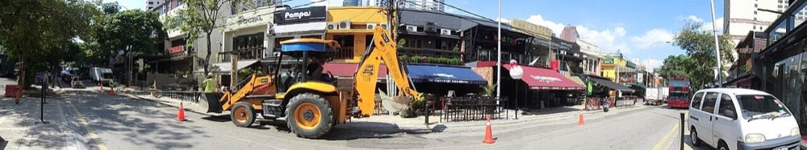
Bukit Bintang, where air-conditioned skybridges link the malls (Wikimedia Commons)
Getting there: walk to KL Sentral and take the monorail to Bukit Bintang, five stops (about 13 minutes), or a 15-minute Grab (RM12–16). Once you are there, air-conditioned skybridges connect the malls, so rain is not a problem.
What it is: KL's busiest shopping and nightlife district. All six stops below are within a 10-minute walk.
Pavilion KL: the district's flagship mall, the widest range of luxury brands and dining, with the crystal fountain out front as a landmark.
Lot 10: the green-clad veteran mall; Lot 10 Hutong food court is in the basement.
Low Yat Plaza: Malaysia's largest electronics mall — phone accessories, cameras and PC parts in one building.
Sungei Wang Plaza: the older local mall next to Low Yat, a maze of small independent shops. More everyday life than Pavilion.
Fahrenheit 88: across from Pavilion, concentrated Japanese brands and a Uniqlo flagship.
Bukit Bintang crossing: buskers and street-dance crews gather here at dusk — the fastest way to feel the city's street energy.
Where to eat
Lot 10 Hutong: a basement food court gathering about 20 heritage hawker stalls from around the Klang Valley (Mo Sun Kau bak kut teh, Kim Lian Kee hokkien mee and more).
Getting there: 10–15 minutes on foot from the malls.
What it is: KL's most famous open-air food street. From 17:00 the tables come out along the whole road — 20-plus restaurants and hundreds of stalls, open until the small hours.
Where to eat
Wong Ah Wah: the street's landmark. Charcoal-grilled chicken wings and satay, 16:00–02:00.
Sun Fong Bak Kut Teh: a 50-year-old institution founded in 1971. Not actually on Jalan Alor — it is at 37 Medan Imbi, a 10–12 minute walk; open daily 07:00–23:00.
Char koay teow and oyster omelette stalls: cooked to order over a roaring flame.
Ikan bakar (grilled stingray) and chicken skewers: the most atmospheric stretch, with the charcoal going full blast after 19:00.
Fresh sugarcane juice and coconut water.
Supper (after 21:00)
The two streets behind Jalan Alor have a whole row of places open into the early morning, all walkable. Grab back to the hotel is about 15 minutes, RM12–16 (the last monorail is around midnight — after that it is a car either way).
5–10 minutes on foot
Ngau Kee Beef Noodles | Tengkat Tong Shin | 18:00–04:00: a 40-year-old shop with an unmistakable neon sign. Beef ball noodles and dry brisket noodles are the ones to get.
Suzi's Corner | Tengkat Tong Shin | 18:00–03:00: late-night Malay fried noodles and nasi goreng. Closed Tuesdays (not on Day 1).
Changkat Bukit Bintang | until 02:00–03:00: a row of bars and live-music venues in converted shophouses.
10–15 minutes by Grab
Restoran Nasi Kandar Pelita | Jalan Ampang | 24 hours: Malaysia's best-known nasi kandar chain — rice under three or four curries at once.
Nasi Lemak Wanjo | Kampung Baru | 06:00–00:30: the sambal is the whole point.
Pudu Wai Sek Kai (Glutton Street) | Pudu | approx. 11:00–22:00: an old supper street with the most authentic Cantonese and Peranakan flavours.
ABC Bistro Cafe | Masjid India | 24 hours: a round-the-clock mamak in the Indian quarter.
Yan Yang A One | Jalan Klang Lama | 24 hours: dim sum in the middle of the night — har gow, siu mai, cheung fun.
Kedai Kopi Mee Bon | Taman Million | 06:30–02:00: an old kopitiam still serving dim sum at 2am.
[Day 2 · Wed 10/07] Batu Caves at sunrise, Twin Towers at dusk, Taman Connaught at night
The Taman Connaught night market runs on Wednesdays only — this is the trip's one chance at it. Around town, the LRT, MRT, Monorail and KTM all take a Touch 'n Go card.
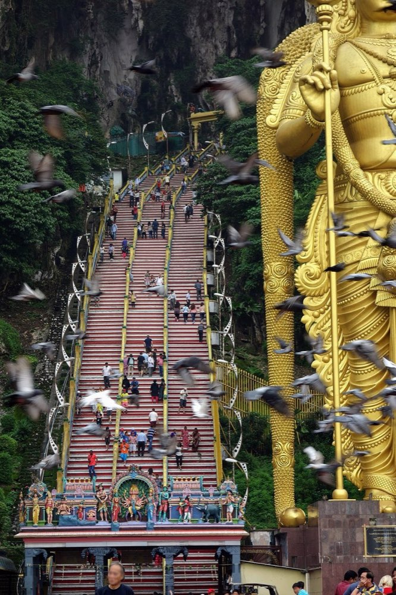
Batu Caves: the rainbow stairs and the 42-metre Murugan statue (Wikimedia Commons)
Getting there: leave at 07:45. Walk to KL Sentral and take the KTM Komuter Batu Caves line to the terminus — about 30 minutes, roughly RM2.60 one way, then a 5-minute walk. No changes, and you board it from the doorstep. A Grab (30–40 min, RM35–45) is the fallback.
Hours: daily 07:00–21:00, free entry. 08:00–09:00 is the best window: 26–28°C instead of the 33–36°C at midday, a quiet staircase, and the most dramatic light falling through the Temple Cave's natural opening. Tour groups only start arriving after 09:30.
The site: a limestone cave complex dedicated to the Hindu deity Murugan, with a 42.7-metre gold statue at the entrance.
The 272 rainbow steps: repainted in 2018 and now the site's signature image. A relaxed climb takes 15–20 minutes. Morning light is front-on, so the gold statue and the coloured stairs photograph well together.
Temple Cave: the roof is open to the sky and a shaft of light falls straight into the chamber in the morning.
Ramayana Cave: a painted cavern to the left of the main stairs, about RM5, worth adding if time allows.
Practicalities: knees must be covered inside (sarongs can be hired on site); wear proper shoes. The macaques will snatch food and phones — carry nothing in your hands, do not feed them, and keep bags zipped.
Suria KLCC: the mall under the towers, daily 10:00–22:00. Isetan on level 4; the lower-ground supermarket is where the white coffee and durian sweets for souvenirs live.
Aquaria KLCC: lower ground of the Convention Centre, 5 minutes from Suria via the skybridge, daily 10:00–20:00 (last entry 19:00). A 90-metre underwater tunnel; allow 1–1.5 hours. Cheaper booked online.
Petrosains Discovery Centre: level 4 of Suria KLCC, Tue–Sun 09:30–17:30 (closed Mondays). Hands-on science exhibits, about 2 hours.
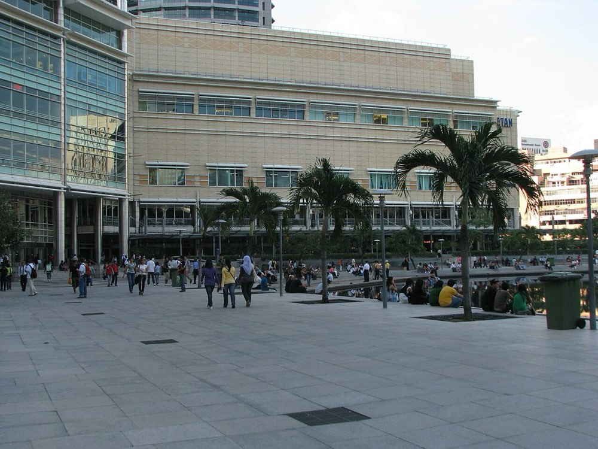
KLCC Park looking up at the towers — best just before they light up (Wikimedia Commons)
Getting there: walk straight out of the mall — the park is directly behind Suria KLCC.
KLCC Park: the best place to photograph the towers in full, especially from the far side of the pool.
Lake Symphony fountain: a light-only show at 19:30, then the light-and-music shows start at 20:00 (every 30 minutes after that, adjusted around prayer times). Coming down from the tower at 19:30 lines up with that show; call the car at 19:45 — push the market back another half hour if you want the 20:00 music show.
When to shoot: use the park for the daytime full-frame shot of the towers; sunset is around 19:10, and you spend the 18:45–19:30 blue hour up on level 86 watching the city light up.
Getting there: the ticket desk is inside Suria KLCC. Check in by 18:15; timed entry, and a missed slot is not rebooked.
The towers: designed by César Pelli, briefly the tallest building in the world on completion in 1998, with Islamic geometry worked into the facade.
Skybridge and the level 86 observation deck: the walkway on levels 41–42 plus the deck above, 45–60 minutes in total. Tue–Sun 09:00–21:00 (last entry 20:30), closed Mondays. Book online in advance and this trip is on the 18:30 slot.
Going up at 18:30 with sunset around 19:10 in October puts you at the top from sunset through the city lighting up.
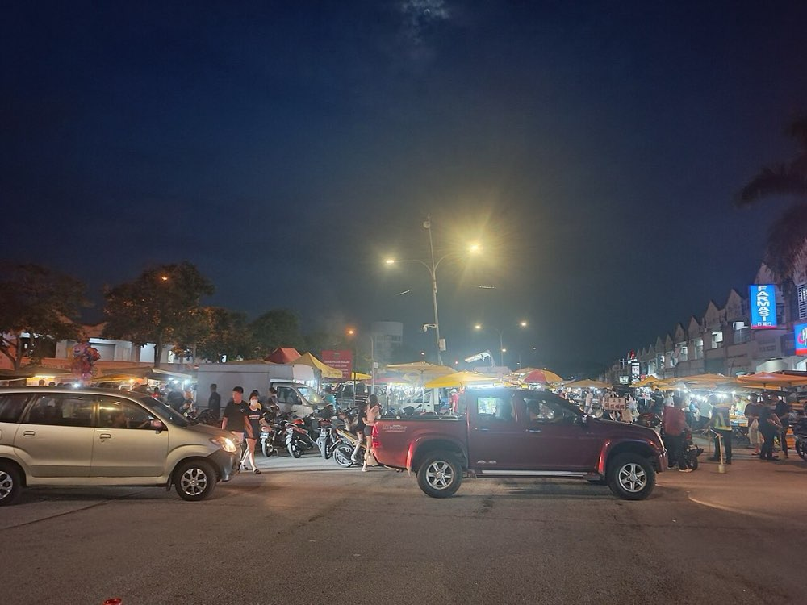
A Klang Valley pasar malam (night market) (Wikimedia Commons)
Getting there: Grab from KLCC at 19:45, about 25–30 minutes to Cheras. The MRT Kajang line also stops at Taman Connaught, with a link bridge through Cheras Sentral, but from KLCC that means a change and roughly 40 minutes.
Wednesdays only — Oct 7 is the trip's single opportunity. KL's pasar malam are roving markets that set up in a different neighbourhood each night; Taman Connaught is the biggest of them.
Scale: roughly 2 kilometres and about 700 stalls along Jalan Cerdas, the longest night market in KL and the second longest in Malaysia. Cooked food, fresh produce, clothing and household goods; walking it one way takes about an hour.
Hours: roughly 17:00–23:00. Stalls are all in place after 18:30 and the crowd peaks then, so 20:00 is about right.
How to do it: walk about a kilometre one way and turn back, or walk to the far end and get a Grab from there — end to end and back is four kilometres.
Practicalities: stalls take cash and Touch 'n Go eWallet almost exclusively, so bring small ringgit notes. It gets crowded; wear bags in front.
What to eat
Ramly burger: the griddled Malay burger wrapped in a fried egg — the soul of any pasar malam.
Apam balik: a thick peanut pancake, cut fresh off the griddle.
Grilled wings and satay: a whole row of charcoal stalls, noticeably cheaper than Jalan Alor.
Char koay teow, hokkien mee, oyster omelette: the stretch where the Chinese stalls cluster.
Air tebu (sugarcane juice), coconut water, cendol
Kuih and tropical fruit: durian, mangosteen and rambutan cut to order.
Grab back to the hotel at 22:00–22:30; no supper tonight.
Fallback: if you skip the market, have dinner at KLCC (19:45–21:00)
Madam Kwan's KLCC: level 4 of Suria KLCC, reliable nasi lemak and rojak, roughly 11:00–22:00.
Suria KLCC food court: on Level 2 — nasi lemak, roti canai, laksa and satay in one sitting, roughly 10:00–22:00.
Sun Fong Bak Kut Teh: 37 Medan Imbi, daily 07:00–23:00, about 10 minutes by Grab from KLCC.
[Day 3 · Thu 10/08] Putrajaya's pink mosque and the Chinese old town
Petaling Street is in the evening — the stalls are all up by then, and dinner happens there too.
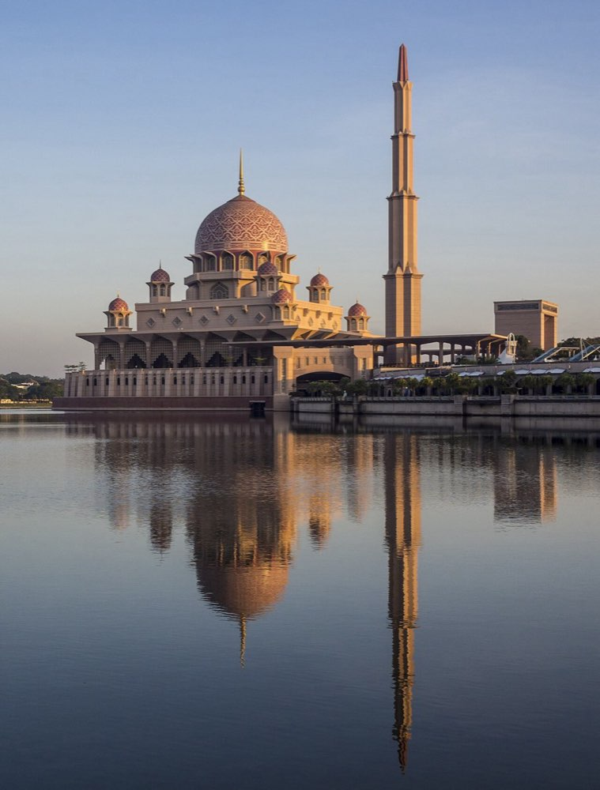
Putra Mosque's rose-tinted granite reflected in the lake (Wikimedia Commons)
Getting there: 08:15, a 10-minute walk to KL Sentral → KLIA Transit to Putrajaya & Cyberjaya station, about 20 minutes, roughly RM14 one way, departures about every 30 minutes → Grab 10–15 minutes from the station to the mosque. About an hour door to door.
Alternative: Grab the whole way from the hotel, about 40 minutes and RM60–80. Split three ways it is competitive, and it removes the transfer.
Visiting hours: non-Muslims Sat–Thu 09:00–12:30, 14:00–16:00 and 17:30–18:00 (Friday afternoons only). This visit is a Thursday, so arriving at 09:30 clears the 12:30 prayer closure comfortably.
Putra Mosque: completed in 1999, its rose-tinted granite dome is the signature, sitting on the edge of Putrajaya Lake with room for 15,000 worshippers. Free entry — scan the QR code to register at the visitor entrance, borrow one of the free hooded red robes, remove your shoes, and keep arms and legs covered.
Dataran Putra & Perdana Putra: right beside the mosque. The green-domed Prime Minister's office framed against the pink mosque is the classic Putrajaya shot, and costs nothing from outside.
Heads up: Putrajaya is wide open with almost no shade. Bring water and a hat.
Back into town and lunch (11:15–13:30)
Getting there: Grab back to Putrajaya Sentral → KLIA Transit to KL Sentral → LRT to Pasar Seni, arriving around 12:30 in the Chinatown area.
Lunch (12:30–13:45)
Nam Heong Chicken Rice: Hainanese chicken rice since 1938, Michelin-recommended, at 56 Jalan Sultan. Opens daily at 10:00 and closes when sold out.Expect a queue; around midday is safest.
Kim Lian Kee: open since 1927, dark-soy hokkien mee and claypot loh shu fan, at 92 Jalan Hang Lekir. 11:00–22:30, closed Wednesdays (this visit is a Thursday, so it is open).
Ho Kow Hainam Kopitiam: a Hainanese coffee shop open since 1956 — kaya toast, half-boiled eggs and kopi, at 1 Jalan Balai Polis. 07:30–15:30, closed Mondays (this visit is a Thursday, so it is open).
Hon Kee Porridge: a long-standing Cantonese congee shop. Opens at dawn and closes around 14:30, and often sells out before that — go at breakfast instead.
Guilinggao (herbal jelly): sold by several herbalists along the street, available any time in the afternoon.
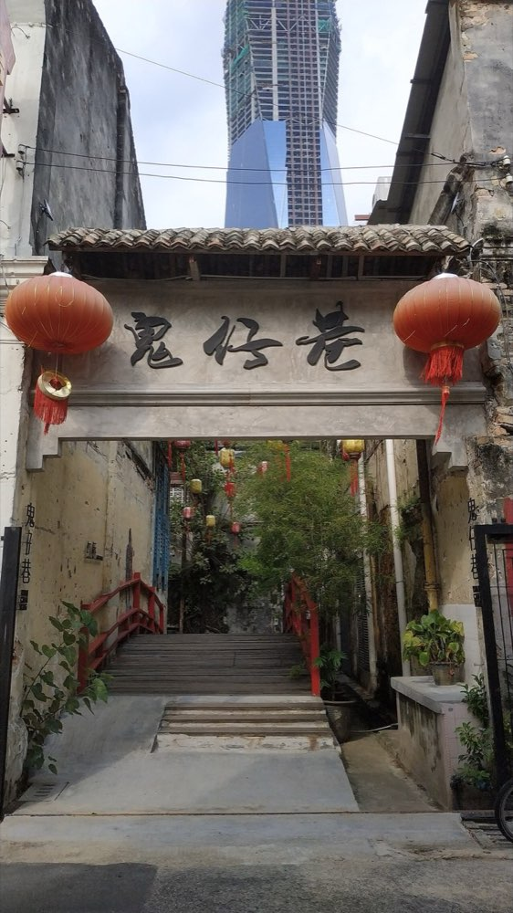
Kwai Chai Hong: murals along a restored back lane (Wikimedia Commons)
Getting there: 2–5 minutes on foot from wherever you ate.
Kwai Chai Hong: the back lane between Petaling Street and Lorong Panggung; the Cantonese name means roughly "Little Demon Alley". In 2019 ten pre-war shophouses — six fronting Petaling Street, four on Lorong Panggung — were restored along with the lane between them. The walls carry murals of 1960s Chinese life in KL, hung with red lanterns. Daily 09:00–24:00, free.
Lorong Panggung: the pre-war shophouses on both sides are now cafés, small bars, galleries and independent shops. Give it 30–40 minutes.
Merchant's Lane: a much-loved café on the upper floor of a Petaling Street shophouse, with the original brickwork and light well intact — the emblem of this quarter's revival.
Suggested loop: Kwai Chai Hong for the murals → out through Lorong Panggung → back along the Jalan Sultan shophouses → on to REXKL.
Where to eat
Egg tarts and nyonya kuih from the cafés in the lane.
Getting there: 5–8 minutes along Jalan Sultan from Kwai Chai Hong.
REXKL: the REX cinema, opened in 1947 and left derelict after several fires, reopened in 2019 as a bookshop, exhibition hall and food space with the raw brick and steel left exposed.
BookXcess at REXKL: the old auditorium rebuilt as stacked walls of books and stepped seating, with a circular "book maze" at the centre. Mostly English titles and very cheap.
Ground floor: food stalls and an exhibition space that often hosts independent markets, art shows and live music.
Hours: Mon–Thu 08:30–22:00, Fri–Sun 08:30–24:00. This visit is a Thursday, so it closes at 22:00.
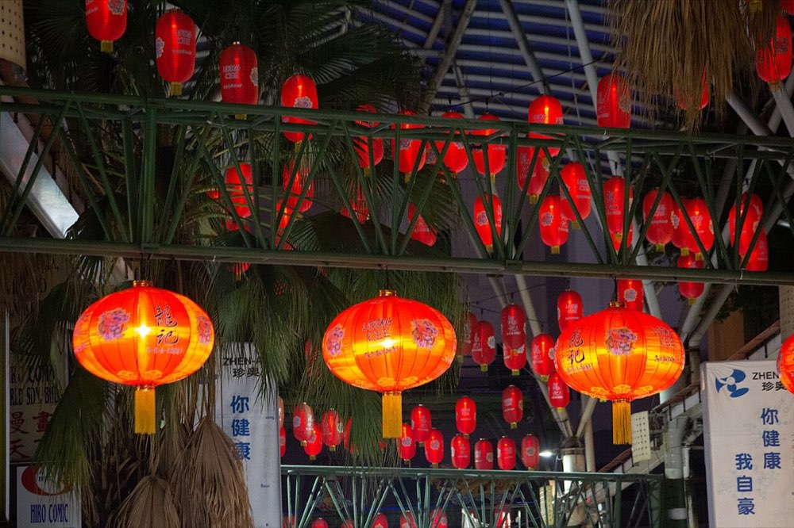
Petaling Street and its red lanterns at night (Wikimedia Commons)
What changes: Petaling Street only becomes itself after dark — awnings go up and the street under the red gateway turns into a dense night market, with the old buildings, antique shops and herbalists trading alongside clothes, souvenirs and hawker stalls. Haggling is normal; start at half the asking price.
Central Market (Pasar Seni): 5 minutes away, daily 10:00–22:00. An art-deco market with batik, pewter and handicrafts under one air-conditioned roof.
Dinner, without leaving the street
Most of the famous names here are breakfast-and-lunch places that shut by mid-afternoon. Only the ones marked "open tonight" below are available at this hour.
Open tonightKim Lian Kee: 92 Jalan Hang Lekir, 11:00–22:30, closed Wednesdays (Thursday this trip). Open since 1927 — dark-soy hokkien mee and claypot loh shu fan. The pick for a proper sit-down dinner tonight.
May be closedNam Heong Chicken Rice: 56 Jalan Sultan, opens 10:00 and closes when sold out; listed closing times vary. Hainanese chicken rice since 1938, Michelin-recommended.
Closed tonightHo Kow Hainam Kopitiam: 1 Jalan Balai Polis, 07:30–15:30, closed Mondays. Kaya toast and half-boiled eggs.
Closed tonightHon Kee Porridge: opens at dawn, closes around 14:30 and often sells out before that. Breakfast or not at all.
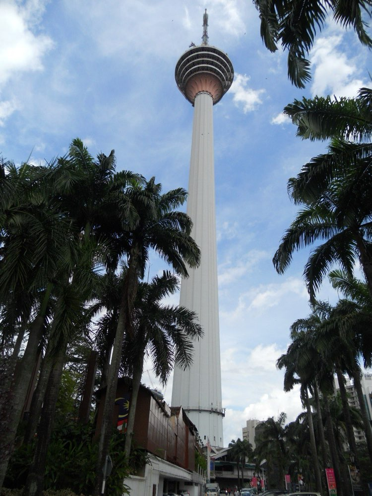
KL Tower, rising from the forest reserve hill (Wikimedia Commons)
Getting there: Grab from Chinatown at 19:00, about 15 minutes; or the Monorail to Bukit Nanas and up the hill (steep — take the shuttle).
KL Tower: a 421-metre communications tower opened in 1996. Because it sits more centrally and higher than the Twin Towers, this is the only viewpoint that fits the whole of the Twin Towers into a single frame — particularly good at night. The deck is open daily 09:00–22:00, last tickets 21:30.
Sky Deck and Sky Box: an open-air deck with glass boxes you can stand in to photograph the city under your feet. Expect a queue. It needs the pricier combo ticket and closes in thunderstorms — the indoor Observation Deck is enough for the night view.
Famous food near the tower (if Chinatown was not enough, or you want one more round)
KL Tower sits on a hill inside the Bukit Nanas forest reserve, and there is nothing famous in the grounds — you have to come back down. The forest trail to Bukit Bintang takes 20 minutes and is unlit at night — take a Grab.
Restoran Nasi Kandar Pelita｜Jalan Ampang｜24 hours｜Grab 5–8 min: the country's best-known nasi kandar chain — rice under three or four curries.
Lot 10 Hutong｜Bukit Bintang｜about 10:00–22:00｜Grab 8 min: the basement of Lot 10, where long-established hawkers (Hon Kee, claypot chicken rice, pork noodles) share one air-conditioned food hall.
Nasi Lemak Wanjo｜Kampung Baru｜06:00–00:30｜Grab 10 min: the sambal is the whole point.
Ngau Kee Beef Noodles｜Tengkat Tong Shin｜18:00–04:00｜Grab 8 min: 40 years old, and the beef ball noodles and dry brisket noodles are why.
Back at the hotel by 21:30 to pack — no early start tomorrow; the train leaves at 11:40.
[Day 4 · Fri 10/09] Crossing to Penang, Penang Hill at night and Wufoo prawn mee
Today runs on the KTM ETS. It terminates at Butterworth on the mainland — it does not reach Penang island, so a sea crossing still follows. Butterworth station, the bus terminal and the ferry jetty are all inside the same Penang Sentral interchange, a few minutes' walk apart.
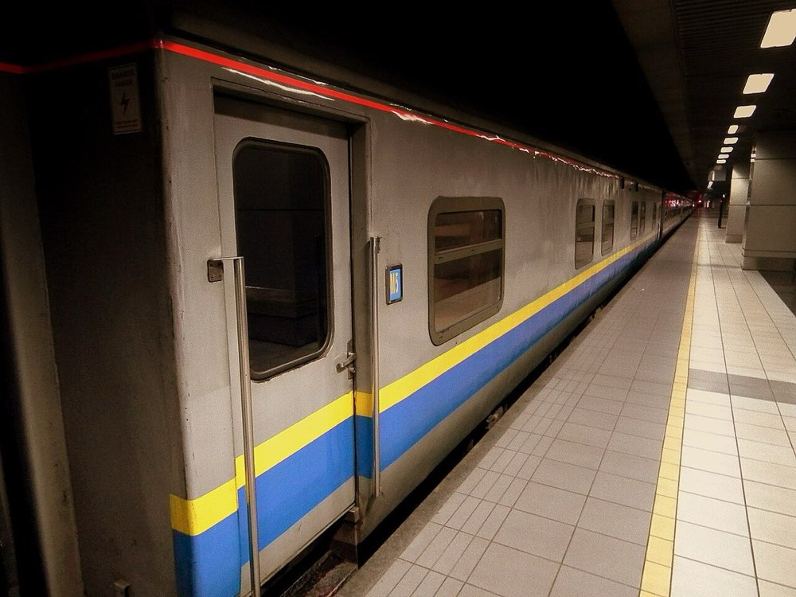
A KTM train at KL Sentral, bound north for Butterworth (Wikimedia Commons)
Service: EX9108 Express, departing 11:40 on Oct 9 and arriving Butterworth at 15:15 (3h35m). RM185 each.
Tickets: e-tickets, one QR code per person — on your phone or printed, scanned at the gate.
Check-in: KTMB advises arriving 30 minutes early; the gate closes 5 minutes before departure and missed trains are not refunded — be at KL Sentral by 11:10. That is a 10–12 minute walk from the hotel, or a 5-minute Grab with the bags — the day this location pays for itself.
Lunch: the ride spans midday, so buy lunch at KL Sentral or next-door NU Sentral before boarding; there is a café car, but the choice is thin and it sells out.
On board: the air conditioning is fierce — bring a light jacket. Racks are inside the carriage; large cases go by the doors.
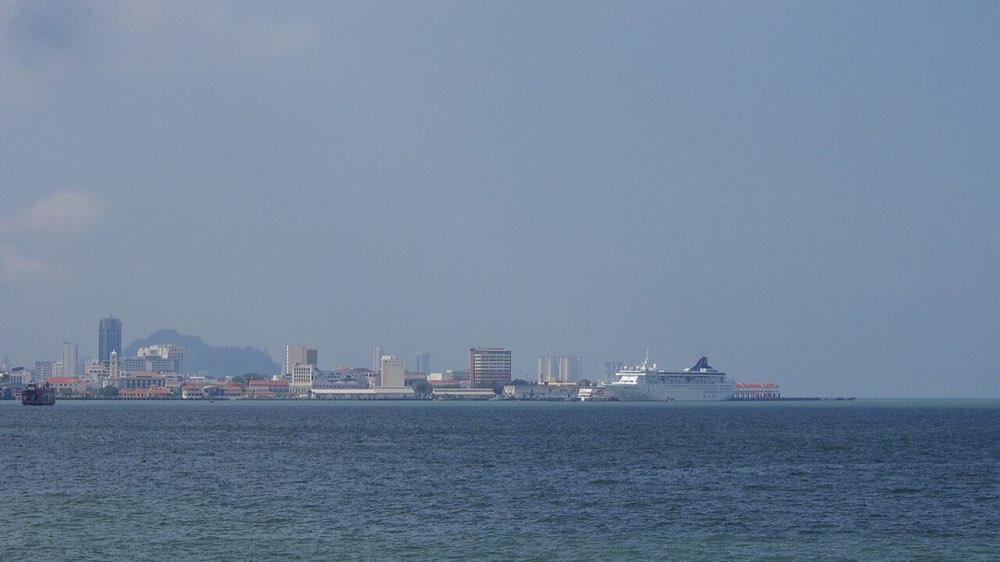
The Penang ferry — 20 minutes across the channel into George Town (Wikimedia Commons)
The transfer: Butterworth station is Penang Sentral — train, bus and ferry terminals in one building, connected by covered walkways that are easy with luggage. About a 5-minute walk.
Frequency: every 30 minutes, 06:30–23:30 (last Butterworth sailing 22:30). The crossing is 3.2 km of the Penang Strait, about 15–20 minutes. The fare is around RM2.
Important: the ferry is fully cashless. Tap a credit or debit card, a Touch 'n Go card or an e-wallet; check your card works before boarding.
The new vessels carry foot passengers, motorbikes and bicycles only — cars use the Penang Bridge. Luggage is no problem.
Fallback: if the ferry is suspended or the queue is long, take a Grab from Butterworth station over the Penang Bridge — 30–45 minutes and RM30–45, still in time for a late-afternoon check-in.
Getting there: Pangkalan Raja Tun Uda ferry terminal to 218 Jalan Macalister, about 10–12 minutes by Grab.
Where it sits: west of the old town, outside the UNESCO core zone. It is a 15-minute walk to KOMTAR and Penang Times Square, but the murals, Kimberley Street and the Chulia Street bars are 2–3 km away — use Grab (5–10 min, RM8–12) or the free CAT shuttle rather than walking it in 33°C heat.
What it buys you: Macalister Road is a working local food belt in its own right (Swatow Lane and Penang Road are walkable), and it sits on the airport side of town — on departure day, leaving from Macalister saves 5–10 minutes over leaving from the waterfront.
Snack fallback (dinner is not until 20:30, so eat something before the hill)
Swatow Lane: 12–15 minutes on foot, where Macalister meets Penang Road — old-school ice kacang and char koay teow.
Getting there: drop the bags and go straight out — Grab from the hotel to the lower funicular station at 16:45, about 20 minutes, RM15–20. Trains run every 15–30 minutes until around 23:00 (check the official site).
What it is: the hill behind George Town, a colonial-era hill station several degrees cooler than the city. On a clear day you see all of George Town, the Penang Bridge and across to Butterworth.
Timing: up by 17:15, walk the viewpoints and trails while it is still light; sunset in October is around 19:15. Stay for the city lights and you get daylight, dusk and night in one visit. Head down around 20:00.
Tickets: foreigner return around RM30. Friday evening is peak time up, and there is a queue down at night too — the Fast Lane ticket (around RM80) skips both and keeps dinner on schedule.
Note: The Habitat rainforest trail closes in the late afternoon, so it is skipped this time. October can bring afternoon thunderstorms — if it pours, eat first and go up later.
Getting there: Grab from the lower station to 13 Lebuh Katz in the old town, about 25 minutes.
What it is: a second-generation prawn mee and lor mee shop, 30-plus years in, that still simmers its prawn broth over charcoal — noticeably deeper than the average stall.
Open 16:00–00:30, closed Sundays — 10/09 is a Friday, so eating after the hill is no problem.
What to order: one Hokkien prawn mee (orange-red prawn broth) and one lor mee (thick dark starchy gravy, with vinegar and garlic) to compare.
Getting there: about 10 minutes' walk from Wufoo to 153B Lebuh Pantai.
What it is: three shophouses knocked through — café at the front, gallery and bookshop in the middle, bar and live music at the back, and a cake counter more than ten metres long. At night it is mostly the back bar: dessert and a drink to finish.
Open until around midnight — confirm on the night. Grab back to the hotel is 8–10 minutes, RM8–12; do not walk (street lighting is sparse).
[Day 5 · Sat 10/10] Cheong Fatt Tze Mansion, street art and the clan jetties
After a late night, sleep in. All three stops are in the heritage core, 10–15 minutes' walk apart. The Cheong Fatt Tze Mansion is guided-tour only — take the 11:00 tour, street art in the afternoon, the jetties towards evening, and back to Red Garden next to the mansion for the night.
Getting there: Grab from the hotel at 10:30, about 10 minutes to Lebuh Leith.
What it is: the home of Cheong Fatt Tze, the late-Qing "Rockefeller of the East" — indigo walls, 38 rooms and 7 courtyards, feng shui layout mixed with Western cast iron and stained glass. Indochine was filmed here; half of it is now a boutique hotel.
Entry by guided tour only, roughly 11:00, 14:00 and 15:30 — confirm on site. Tours run 45–60 minutes. Arrive 10–15 minutes early to buy tickets.
Bonus: tonight's Red Garden food court is right next door, so you will already know the way.
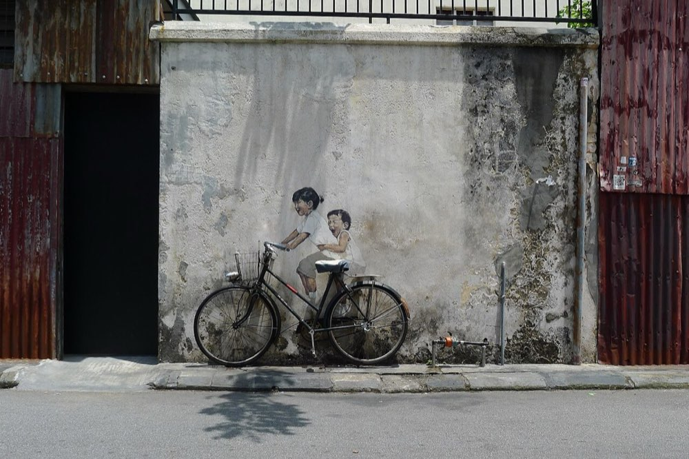
Kids on Bicycle — George Town's most famous mural (Wikimedia Commons)
Lunch (12:00–13:00; both are daytime-only and open on Saturday 10/10)
Joo Hooi Café · 475 Jalan Penang · about 11:00–17:30: about 10 minutes' walk from the mansion. Asam laksa, char koay teow, rojak and cendol at one table — the most efficient stop.
Siam Road Charcoal Char Koay Teow · 82 Jalan Siam · Tue–Sat about 12:00–18:30: Michelin Bib Gourmand, an old hand frying plate by plate over charcoal. About 2 km from the old town by Grab, and it closes when sold out — go first if you want it.
Street art (13:00–15:30)
Getting there: from Joo Hooi, 5 minutes by Grab or about 15 minutes on foot to Armenian Street.
Murals: the main cluster is around Armenian Street and Lebuh Ah Quee, all walkable. The best known is Lithuanian artist Ernest Zacharevic's Kids on Bicycle — expect a queue.
Marking George Town steel-rod caricatures: 52 wrought-iron pieces on street corners that poke fun at how each street got its name, comic-strip style. More fun than the murals, and nobody queues.
Weekend bonus: 10/10 is a Saturday, so expect craft stalls and buskers around Armenian Street.
Easy add-on: Khoo Kongsi is right off Armenian Street (about 09:00–17:00, RM15) — Penang's most ornate clan house, worth 45 minutes if you have the energy. 13:00–15:00 is the hottest stretch; duck into a shophouse café for air-con.
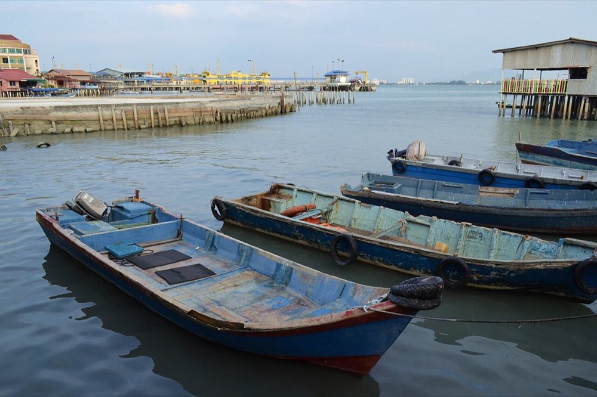
The stilt-house settlement of Chew Jetty (Wikimedia Commons)
Getting there: about 10 minutes' walk from Armenian Street down to the Pengkalan Weld waterfront. Late afternoon means the tour groups are gone and the sun is softer, but shops start closing towards evening — do not leave it too late.
What it is: clan settlements built on stilts over the sea by 19th-century Hokkien migrants, one surname per jetty, still lived in today. Chew Jetty is the longest and busiest of the six, with old houses, sundry shops and snack stalls along the boardwalk.
Next door: Tan Jetty and Lim Jetty are in the same row, with almost no tourists — the version where people are simply living. 3–5 minutes' walk.
Free to enter, but these are people's front doors — check for "no photography" signs and do not shoot into homes.
Wrap-up: Grab back to the Blue Mansion area at 17:30 (5 minutes) and grab a drink nearby before Red Garden fills up.
Getting there: on Lebuh Leith, right next to the Blue Mansion (this morning's tour), 5 minutes by Grab from the jetties.
What it is: a large open-air food court with well over a hundred stalls at once — char koay teow, satay, prawn mee, grilled seafood, roti canai, Thai and Japanese. Ideal for a group who all want something different.
The stage is the point: there is a bandstand in the middle with live singers from around 20:00, working through Mandarin and Hokkien standards to an audience of local families. That is why you come — the food is good, the atmosphere is the reason.
Open from around 17:30 until late (later at weekends) — confirm on the night. Seating is shared: claim a table first, then split up to order, and pay each stall in cash (some take e-wallets).
Note: open-air and unairconditioned, so bring repellent. Beer has its own stall. Grab back to the hotel is 8–10 minutes, RM8–12.
[Day 6 · Sun 10/11] Departure
Penang airport is 16–20 km from George Town, 30–40 minutes by road; Sunday traffic is lighter, so 45 minutes is ample.
Last free time in George Town (09:00–11:30)
Pick one:
Hin Market at Hin Bus Depot: Oct 11 is a Sunday, so the market runs 10:00–17:00 — crafts, secondhand, independent labels and street food, the weekend fixture for young Penang. Five minutes by Grab; 10:00–11:15 is enough for a lap.
Love Lane and Chulia Street by day: the same streets look nothing alike in daylight — shophouse cafés, independent bookshops and old barbershops, quiet enough to photograph.
Souvenir shopping: Tambun biscuits and nutmeg products, white coffee, BOH tea. Old-town shops open from about 09:30 and are cheaper than the airport.
The folded-umbrella blue roof of the national mosque, and the 1910 Moorish-style white heritage station, 5–10 minutes apart.
Mosque, non-Muslims roughly 09:00–12:00 and 15:00–16:00 (no mornings on Friday)
5–10 minutes by Grab from the hotel, so it slots into the way back from Putrajaya on Day 3. The mosque only opens in two windows, and 09:00–12:00 is the safer one.
High quality here, but check your own quarantine rules — Taiwan, for one, only admits cleaned and processed nests (dried or cooked) and bans raw ones with blood or feathers; declare it on arrival either way.
Batik, wood carving and small pewter pieces in one place.
KL only — buy on Day 3
When to shop: (1) KL-only items (Royal Selangor pewter, Central Market handicrafts) have to be bought on Days 1–3. (2) Buy Penang souvenirs on the evening of Oct 9 or the afternoon of Oct 10, or top up at Penang airport duty free. (3) Day 4 involves a train and a ferry with your own bags, so avoid buying anything heavy in the first three days.
Sources: compiled from personal travel notes; venue links are Google Maps searches. ETS schedules follow KTMB's official site. Photographs are from Wikimedia Commons under CC BY / CC BY-SA licences. Disclaimer: this page is a personal travel itinerary. Opening hours, closing days, prices, reservations and transit details should be confirmed against official sources before you travel.